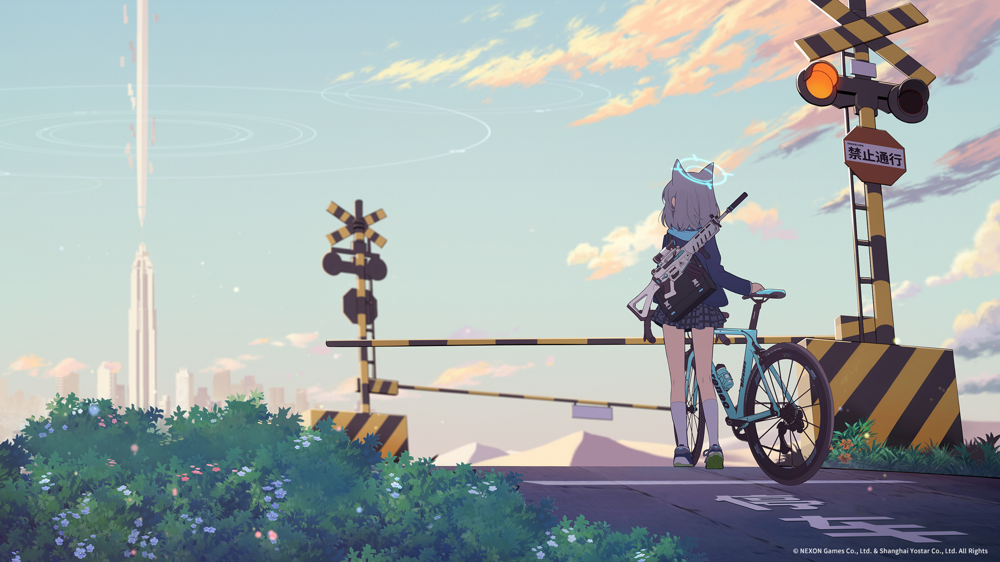

Blue Archive is a very popular gacha game that has players assuming the role of a teacher at a school which is designed to train young girls into being defenders of the Earth, with guns of course.
Blue Archive is a very popular gacha game that has players assuming the role of a teacher at a school which is designed to train young girls into being defenders of the Earth, with guns of course. The game is all about training, growing, and expanding your roster of characters. You do this by grinding a lot of bosses and also trying to pull on a character from the current banner! If you're looking for a shortcut to get good rewards, then you best use the codes. They're helpful for all Blue Archive players and will assist you in achieving your goals of having the best students and the best team compositions in the game.
shirogo